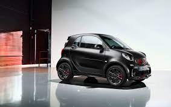

Smart

Die Idee
Die Idee eines Fahrzeugs unterhalb der VW-Polo-Klasse hat die Automobilindustrie der 1980er-Jahre permanent beschäftigt. 1986 stellte Daimler-Benz die Projektion eines Mercedes-Stadtwagens vor (NAFA, Auto Bild Heft 33/1986 und auto motor und sport Heft 7/1986), mit Vorderradantrieb und Quermotor (von Daihatsu); diesen Entwurf kann man als Vorboten des Smart bezeichnen. Nicht die Industrie allein, auch zahlreiche deutsche Hochschulen und Universitäten haben sich mit der Idee eines Kleinstwagens beschäftigt. Dafür zwei Beispiele:
Das Projekt BCC (1984–1989) an der Hochschule für Gestaltung Pforzheim; einige Studenten unter der Leitung von Johann Tomforde (dem späteren Smart-Projektleiter) haben die wichtigsten konzeptionellen Eigenschaften in das Projekt eingearbeitet.[1]
Das Projekt Mocar (1986–1988) an der Hochschule der Bildenden Künste Kassel (Universität Kassel), wo der Automobildesigner Mouftoglou Dimitris (vormals Student in Pforzheim) unter der Leitung von Horst Sommerlatte (Recaro, Airbus) eine Konzeption vorgelegt hat, die mit den späteren Smart zahlreichen Gemeinsamkeiten aufweist (u. a. in Form, Format, Fahrzeugphilosophie). Die Arbeitsergebnisse wurden der Industrie vorgelegt (6/1989: 9 Jahre vor der Smart Einführung) und mit großem Interesse aufgenommen.[2]
Gründung des Unternehmens
Die konsequente Vermarktung der Idee begann Nicolas Hayek, der Gründer der Swatch-Gruppe. Seine Vision von einem Swatch-Mobil[3], das klein und vor allem günstig sein sollte, führte ihn zum VW-Konzern. Unter anderem sah das Konzept eine (ähnlich den Swatch-Uhren) auswechselbare Karosserie sowie eine Zusammenarbeit mit der Bahn vor, in Form einer Mitführbarkeit des Wagens für weite Reisen. Als VW aus dem Projekt ausstieg, sprang Mercedes-Benz ein. Bis Anfang 1994 existierten lediglich zwei Designstudien.[4] Neben dem innovativen Design legte Nicolas Hayek vor allem einen großen Wert auf einen umweltfreundlichen Elektro- oder Hybridantrieb.[3] Das Unternehmen Smart wurde 1994 von Hayek in Biel als gemeinsame Tochtergesellschaft von Daimler-Benz und der SMH SA (Sociéte Suisse de Microélectronique et d’Horlogerie) als Micro Compact Car AG gegründet. Im Zuge der Entwicklung des Fortwo (damals noch „City Coupé“ genannt) stieg Hayek aus dem Projekt aus, weil er sich an den steigenden Entwicklungskosten nicht mehr beteiligen wollte und weil sich Daimler-Benz weigerte, Techniken (etwa Elektromotoren direkt an den Rädern) für ein spritsparendes Auto einzubauen, die ja eigentlich den Sinn dieses Autos ausmachen sollten. Daimler-Benz sah damals keine Zukunft für Elektro- oder Hybridantriebe.[3] Daraufhin verkaufte Hayek seine Anteile am 1. November 1998 an Daimler-Benz mit den Worten „Der heutige benzinbetriebene Smart ist ein Produkt aus dem Hause Daimler-Benz und hat nichts mit den Plänen des einstigen Swatch-Teams gemein.“[3]. Im September 2002 firmierte sich die Micro Compact Car Smart GmbH in Smart GmbH um.
Die Umstrukturierungen
Vor der Umstellung der Vertriebsstruktur gab es im März 2005 in Deutschland noch 106 eigenständige und gut am typischen gläsernen Smart-Turm zu erkennende so genannte „Smart Center“. Der Erlanger Architekt Ralph Küster konzipierte und gestaltete den in verschiedenen Modulgrößen variablen Systembaukörper bereits 1998. Mit dem Jahreswechsel 2005/2006 wurden die meisten Center geschlossen. Verkauf und Service werden nun vor allem von bestehenden Daimler-Niederlassungen in einem Shop-in-Shop-Konzept umgesetzt. Daneben gibt es zahlreiche autorisierte Autohäuser, die nun den Smart verkaufen und pflegen. Bis heute ist die wirtschaftliche Lage angespannt. Aus diesem Grund wurde das Vertriebskonzept umgestellt, die Produktpalette reduziert und Neuentwicklungen gestoppt. Roadster und Forfour wurden nicht mehr produziert.
Die Smart GmbH wurde – nach 2 Abbauwellen in den Jahren 2005 und 2006 – aufgelöst und die verbleibenden Gewerke (Entwicklung, Vertrieb, Marketing, HR) wurden in die bestehende Daimler-Organisation vollständig integriert. Das Unternehmen hat sich auf den Fortwo konzentriert. Das aktuelle Modell wird als Coupé und Cabrio seit dem Frühjahr 2007 produziert und zum Verkauf angeboten, seine Entwicklung ist 2006 abgeschlossen worden. Die Brabus-Variante ist seit Herbst des Jahres 2007 erhältlich. Der neue Smart wurde im Hinblick auf seine geplante Markteinführung in Nordamerika insgesamt um knapp 20 Zentimeter verlängert, um den dortigen Crash-Normen zu entsprechen (größere „Crashboxen“ vorne und hinten). Nach einer erfolgreichen Marketingkampagne und Registrierungsphase für Kaufinteressenten im Jahre 2007 wird der Smart ForTwo nun seit Februar 2008 an Kunden in den USA ausgeliefert. Die Markteinführung wurde durch besonders hohe Benzinpreise im Jahre 2008 begünstigt. In London werden in einem Großversuch 100 Smart Fortwo mit Elektroantrieb getestet, diese basieren allerdings noch auf dem vorherigen Modell. Mercedes-Umweltchef Herbert Kohler kündigte im Juni 2008 an, dass es noch in der aktuellen Modellgeneration einen „E-Smart“ mit Lithium-Ionen-Akkus geben sollte.[5]
Standorte und Logistik
Die Verwaltungszentrale von Smart liegt in Böblingen. Produziert wurde vor allem im französischen Hambach, nahe der saarländischen Grenze. Die Produktionsstätte wird auch Smartville genannt. Hier wurden der Fortwo, dessen Cabrio-Variante und auch der Roadster hergestellt. Seit Dezember 2020 gehört das Werk Smartville gänzlich der britischen Firma Ineos, welche dort ab Sommer 2022 ihre Grenadier Geländewagen bauen möchte. Ineos ist mit Daimler einen Deal eingegangen, trotzdem den Smart EQ in dem Werk weiter zu produzieren. Später sollen unter diesen Bedingungen auch die folgenden Kleinstwägen EQ der Marke Mercedes-Benz gebaut werden.[14] Das Nedcar-Werk im niederländischen Born wurde zwischen 2004 und 2006 zum Bau der Smart Forfour Modelle genutzt[15]. Im Laufe des Jahres 2006 wurde die Produktion auf die neuen Modelle umgestellt und es wurden weitere Produktionsstätten in Europa und Asien aufgesucht. Die Mitarbeiter wurden im Oktober 2006 in die DaimlerChrysler-Organisation integriert. Die Smart GmbH wurde Ende 2006 aufgelöst.
Der CityFlitzer
Das erste Modell von Smart, der Fortwo, ist ein heckgetriebener, zweisitziger Kleinstwagen. Von der Markteinführung Oktober 1998 bis zur Markteinführung des Forfour (Anfang 2004) wurde er als City-Coupé bezeichnet. 2007 erschien die 2. und 2014 die 3. Generation. Von Ende 2012 bis Mitte 2015 war der Smart Fortwo in der Version ED3 auch mit Elektroantrieb erhältlich. Im März 2017 fand der Marktstart der Elektroversion der dritten Generation des Smart Fortwo (Baureihe 453) statt[20] (auch für alle Smart-Modelle als vierte Generation des Smart ed bezeichnet).[21]
Auf der IAA im September 2017 zeigte die Entwicklungsabteilung den smart vision EQ fortwo. Das ist eine Konzeptstudie ohne Lenkrad und Pedale. Die Autosteuerung erfolgt entweder mittels eines Mobilfunkgerätes des Nutzers oder mittels Spracheingabe. Ausgestattet ist das Modell mit einem Lithium-Ionen-Akku mit einer Kapazität von 30 Kilowattstunden. Das Fahrzeug ist in der Lage, bei Nichtbenutzung selbstständig eine Ladestation anzusteuern und hier aufzutanken. Es kann aber auch über eine automatische Verbindung mit dem Netz Strom an andere Kleinverbraucher abgeben. Eine weitere Besonderheit ist, dass weder herkömmliche Scheinwerfer noch Rücklichter verwendet werden, dagegen liefert ein Black-Panel-Grill die Beleuchtung. Anstelle der Scheinwerfer zeigen LED-Displays Fahrgrafiken mit augenähnlichen Formen; damit soll die Kommunikation nicht mehr nur technisch, sondern auch „auf einer menschlicheren Ebene“ erfolgen. Auf den mit einer Spezialfolie überzogenen Seitenfenstern können von innen weitere Informationen angezeigt werden, die nicht unmittelbar mit dem Fahrzeug zu tun haben (Wetter, Gaststätten, Veranstaltungen, …). Im Inneren gibt es im Frontbereich ein Black-Panel-Display als zentrale Schnittstelle für Interaktionen mit den Insassen. Angestrebt wird, dass das Fahrzeug den Fahrer findet, der also nicht erst zu irgendeinem Parkplatz laufen muss. Das soll auch zu einem völlig neuen Carsharing-Konzept führen.[22] Als Ziel für eine eventuelle Markteinführung wird der Zeitraum ab 2020 genannt. Preise sind noch nicht im Gespräch.[23][24]
Plagiate
Im Oktober 2006 wurde bekannt, dass das chinesische Unternehmen CMEC ein Modell namens Electric City Smart baut, das explizit für den Export nach Europa gedacht ist und – äußerlich – eine fast gleich aussehende Kopie des Smart City-Coupé Bj. 1998–2000 darstellt. DaimlerChrysler kündigte rechtliche Schritte gegen die Kopie an.
Einen weiteren Nachbau hat die chinesische Firma Shuanghuan unter dem Namen Shuanghuan Noble und Bubble genannt, im Programm. Beide Modelle werden in Europa von der italienischen Martin Motors unter eigenem Markennamen produziert und angeboten.